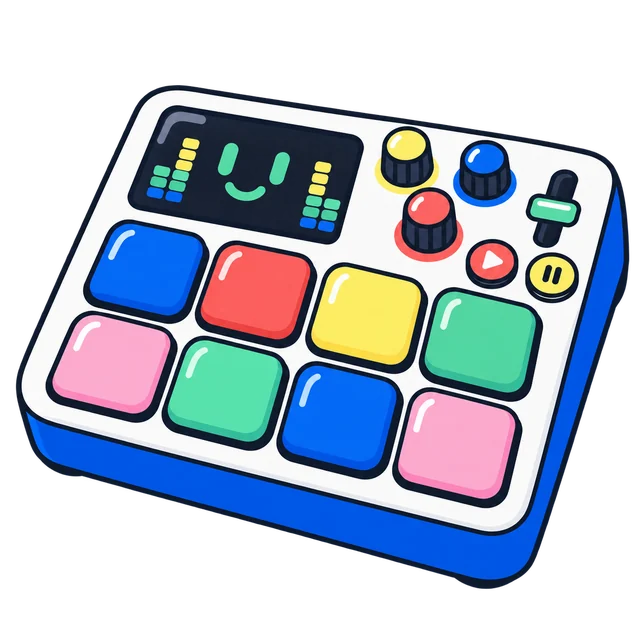

Een sample is een stukje geluid dat je opneemt en daarna als instrument gebruikt. Een hond die blaft, een klap op tafel, of jouw stem die "boem" zegt.
Je kunt geluiden opnemen en daar een ritme mee maken!
Zet de microfoon aan en druk op Opnemen. Werkt de microfoon niet? Kies dan een geluid uit de lijst, of upload er zelf een.